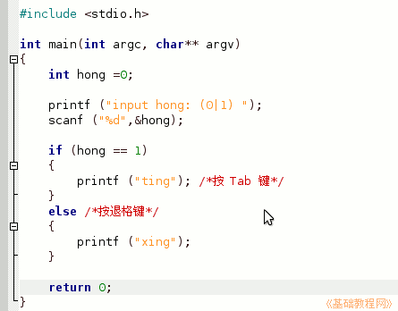
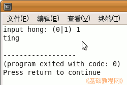
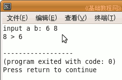

C 编程基础教程
作者：TeliuTe 来源：基础教程网
if 语句也叫判断语句，例如是否正确，比大小等等，下面我们来看一个练习；
1、启动 Geany
1）点菜单“应用程序－编程－Geany”启动 Geany ，新建一个 c 源程序；
2）点菜单“文件－另存为”命令，以“if”为文件名，保存文件到自己的文件夹；
2、输入程序代码
1）先来看一个判断红绿灯的，输入一个数，1表示亮，0表示灭，红灯停、绿灯行；
2）在下面的蓝色代码区域里，输入下面的代码（按 Tab 键跳格缩进，/*..*/是注释可以先不输入）；
|
int hong =0; printf ("input hong: (0|1) "); scanf ("%d",&hong); if (hong == 1) { printf ("ting"); /*按 Tab 键*/ } else /*按退格键*/ { printf ("xing"); } |
3）第一段是定义变量并赋予初值，
第二段是提示并输入一个数给变量 hong,
4）第三段分两块 if 和 else，是二选一，选哪一个根据括号里的条件，
如果 hong 的值是1，运行 printf ("ting"); ，否则就运行下面的一行 printf ("xing");

5）注意括号里面是两个等号，这是比较运算符，一个等号是赋值语句；
6）保存、编译、生成、运行，输入数字 1，结果显示“ting”；

3、练习
1）输入两个数比大小，新建一个 c 源程序，保存文件名为 daxiao
2）输入下面的代码：（%d%s%d 有三个百分号控制后面三项，%s 控制中间的字符串项）
|
#include <stdio.h> int main(int argc, char** argv) { int a,b; a = 0; b = 0; printf ("input a b: "); scanf ("%d %d",&a,&b); if (a>b) { printf ("%d%s%d",b,"<",a); } else { printf ("%d%s%d",a," < ",b); } return 0; } |
3）注意输入的缩进格式，另外两个赋值语句也可以合并为一句 a = b = 0，运行结果为；

本节学习了 if 判断语句的基本操作，如果你成功地完成了练习，请继续学习下一课内容；
本教程由86团学校TeliuTe制作|著作权所有
基础教程网：http://teliute.org/
美丽的校园……
转载和引用本站内容，请保留版权信息和本站链接。